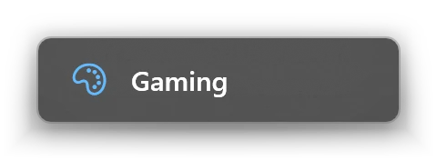
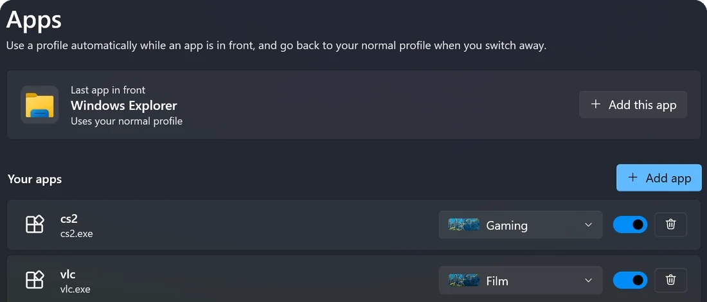
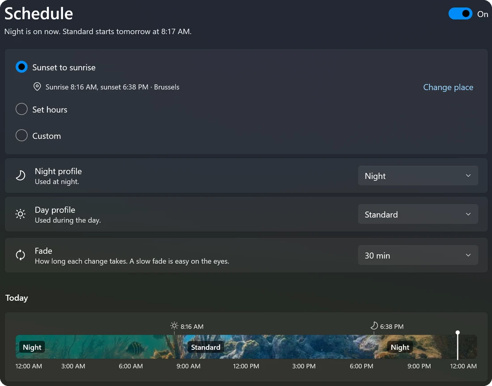

Colour profiles for your display.
Save the look you want for games, films and late nights, then switch in a click, with a hotkey, per game or on a schedule.
- No account, no telemetry
- Restores your colours
- Open source


Click a profile, or press Ctrl+Alt+1 to 4. The looks are the app's own colour maths.
A profile for every moment.
Brighter shadows and stronger colours for competitive games, warm and dim for late-night reading, neutral for photo work. Make one for each and keep them a click away.
- Brightness, contrast, gamma, colour temperature and vibrance
- Start from a template for games, films and night reading
- Share a profile as a link that adds it in one click

Your display, one shortcut away.
Give each profile a keyboard shortcut and switch without leaving your game. A small message confirms the change and never takes the focus.
- Shortcuts for every profile, plus on or off, next and previous
- The quick panel and tray menu are one click from the taskbar
- Stream-friendly: OBS and Discord capture your normal colours

Games get their own look.
Pick a profile for a game or app. DispHub uses it while that window is in front and goes back to normal when you switch away.
- Add the app in front with one click, or choose any program
- Your desktop is never left in game colours

Warmer evenings, automatically.
Fade to your night profile at sunset and back at sunrise, like Night light, or at the hours you choose, with a slow fade that's easy on the eyes.
- Sunset to sunrise for where you live, or set hours
- See today's plan on a timeline

Everything a display needs.
Small, quiet and careful with your screen.
Every display
Colours apply to all connected screens, and you can leave chosen displays alone.
Vibrance
Colour saturation through NVIDIA and Intel graphics, including most laptop screens. AMD is in beta.
Stream-friendly
Changes happen after Windows draws the screen, so viewers and screenshots see normal colours.
Safe
Your original colours are saved first and restored when you pause or quit, even after a crash.
Light
Waits quietly in the notification area and uses very little memory, so games stay smooth.
Private
No account, no ads and no telemetry. Everything stays on your PC.
Shareable
Copy a profile as a link. Anyone with DispHub adds it in one click.
In your language
Community translations on Weblate. Help add your language, no coding needed.
Free, with a one-time Pro.
Everything you need to tune your display is free. Pro adds the automation and supports development. No subscription.
DispHub
- Three profiles
- Brightness, contrast, gamma, colour temperature and vibrance
- Keyboard shortcuts, quick panel and tray menu
- Every connected display
- Templates and shareable links
DispHub Pro
- Everything in DispHub, and:
- Unlimited profiles
- Per-game and per-app profiles
- Schedules with smooth fades
- Different settings for each display
- Choose how see-through the quick panel is
Questions.
Made in the open.
DispHub is built in public. Translate it, suggest a feature or tell us what broke, and it gets better for everyone.
Make your display yours.
Free on the Microsoft Store for Windows 10 and 11.